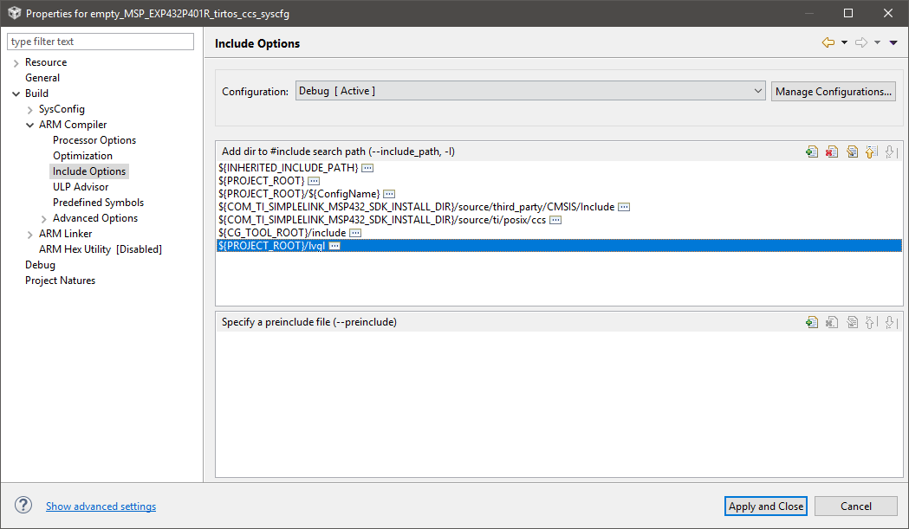
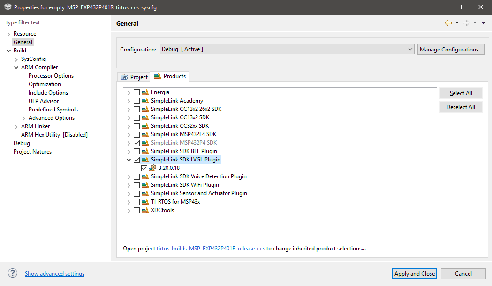
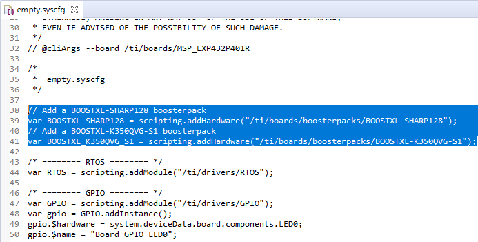
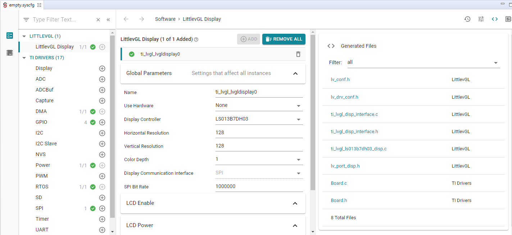

Other Usage Details¶
Configuring LittlevGL¶
LittlevGL has a configuration header file called lv_conf.h. It can be modified manually to configure the library’s basic behavior, disables unused modules and features, adjusts the size of memory buffers in compile time, etc.
SysConfig¶
TI’s SysConfig tool is a graphical user interface that makes it easy to configure software & hardware components and can be used to configure LittlevGL’s configuration file, lv_conf.h
In this Plugin release, SysConfig is optional and available as a preview. (Future release will expand the use of SysConfig.) Note: This SimpleLink LVGL Plugin 3.20.xx release is only compatible with SimpleLink SDK 3.20.xx.
SysConfig versions of the examples are provided in the examples/sysconfig_preview directory tree. These examples are basically the same as the examples in examples/rtos and examples/nortos, except they use SysConfig to generate configuration code instead of having the application provide it.
Brief Overview¶
Examine the sharpsimpledisplay example inside the <SIMPLELINK_SDK_LVGL_PLUGIN_INSTALL_DIR>/examples/sysconfig_preview/<board>/lvgl/sharpsimpledisplay directory.
Located inside each sysconfig_preview example directory is a sharpsimpledisplay.syscfg file. This file can be edited manually or opened up inside the SysConfig GUI:
Fig. 8 SysConfig overview
The Global Parameters box can be expanded to reveal LittlevGL Library Configurations that are used to generate lv_conf.h
Fig. 9 SysConfig overview
Memory Considerations¶
LittlevGL requires a minimum of 64 kB Flash/ROM and 10 kB RAM (when configured to use only essential components), but can easily use up > 100 kB Flash/ROM if more advanced features widgets are enabled.
Keep in mind that exact memory consumption will depend on the features, how many objects/widgets, whether display buffer is used, or the display that are actually used in an application. However, below provides some rough numbers to expect.
The LittlevGL Display SysConfig module provides 3 preset LittlevGL Configurations: - Low: ~50 kB of Flash/ROM and (~15 kB RAM with the Sharp128 display) - Only Default Theme is enabled - Only lv_monospace_8 Font is enabled - Only Label, Image, and Line objects are enabled - Medium: ~110 kB of Flash/ROM and (~40 kB RAM with the Kentec display) - Default and Material Themes are enabled - lv_font_dejavu10, lv_font_dejavu20, lv_font_dejavu30, lv_font_dejavu40, and lv_monospace8 are enabled @ 1-bit-per-pixel - Additional objects TabView, Bar, Chart, Button, CheckBox, Dropdownlist, & Slider are enabled. - High: >150 kB of Flash/ROM and RAM use varies with display/buffer usage - All built-in themes, fonts, and objects are enabled
Adding LittlevGL Plugin to Existing SimpleLink SDK Projects¶
Steps shown below demonstrates the procedure in CCS
Regular Non-SysConfig SDK Project¶
- Copy entire LVGL source code from $(SIMPLELINK_SDK_LVGL_PLUGIN_INSTALL_DIR)/source/third_party/lvgl/ to ${PROJECT_ROOT}/lvgl/
- Add include path to compiler options
${PROJECT_ROOT}/lvgl - Add pre-defined symbol to compiler options
--define=LV_CONF_INCLUDE_SIMPLE - Copy lv_conf.h from one of the example projects into the project root and configure as needed.
- Copy all applicable display driver and interface files from $(SIMPLELINK_SDK_LVGL_PLUGIN_INSTALL_DIR)/source/ti/lvgl/drivers to ${PROJECT_ROOT}/
- Manually update project Board files to configure for corresponding display connections. Or just copy the reference board files from the corresponding LaunchPad’s example folder.
- Modify main.c
- Add #include <lv_port_disp.h>
- Add #include <lv_port_indev.h> if using an input device
- Follow LVGL documentation to initialize and utilize LVGL
SysConfig (Preview) SDK Projects¶
- Select SimpleLink SDK LVGL Plugin inside Project Properties -> General -> Products 
- Copy entire LVGL source code from $(SIMPLELINK_SDK_LVGL_PLUGIN_INSTALL_DIR)/source/third_party/lvgl/ to ${PROJECT_ROOT}/lvgl/
- Add include path to compiler options
${PROJECT_ROOT}/lvgl - Add pre-defined symbol to compiler options
--define=LV_CONF_INCLUDE_SIMPLE - Add LVGL Plugin product.json to SysConfig –product option
${COM_TI_SIMPLELINK_SDK_LVGL_PLUGIN_INSTALL_DIR}/.metadata/product.json, ensuring that the LVGL Plugin product.json is above the SDK product.json
Fig. 10 SysCfg options
Open .syscfg file in text editor (Right-click -> Open With), and add Display BoosterPacks at the top of .syscfg file:
// Add a BOOSTXL-SHARP128 boosterpack var BOOSTXL_SHARP128 = scripting.addHardware("/ti/boards/boosterpacks/BOOSTXL-SHARP128"); // Add a BOOSTXL-K350QVG-S1 boosterpack var BOOSTXL_K350QVG_S1 = scripting.addHardware("/ti/boards/boosterpacks/BOOSTXL-K350QVG-S1");

Open .syscfg with SysConfig Editor then add the LittlevGL Display module and configure library/driver 
Modify main.c
- Add #include <lv_port_disp.h>
- Add #include <lv_port_indev.h> if using an input device
- Follow LVGL documentation to initialize and utilize LVGL
Porting Custom Displays¶
For detailed instructions on porting a custom display, please follow the LittlevGL Porting Guide
Following the file structure of the example drivers provided in this Plugin, below are the driver files that need to be ported for a new custom display:
- lv_port_disp.h, ti_lvgl_ssd2119_disp.c, ti_lvgl_ls013b7dh03_disp.c
- Driver for display controller which contains required LittlevGL functions: disp_init(), disp_flush
- Implemented from LittlevGL’s porting templates: lv_port_disp_template.c & lv_port_disp_template.h
- lv_port_indev.c, lv_port_indev.h
- Driver for input device, such as touchscreen
- Implemented from LittlevGL’s porting templates: lv_port_indev_template.c & lv_port_indev_template.h
- lv_drv_conf.h
- Provides macros that abstracts display communication interface calls (such as TI Drivers APIs) from the Display Controller driver
- Implemented from LittlevGL’s display driver template: lv_drv_conf_templ.h
- ti_lvgl_disp_interface.h/c
- Communication interface (SPI, I2C, Parallel) between display controller and host MCU